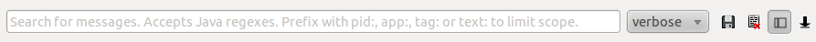

LogCat 可以用來查看應用程式或系統產生的 logs （包括發生錯誤時的 stack traces），可以從 ADB device/shell command - logcat 或 DDMS 存取到它。
[adb] logcat [options] [filterspecs]|
|
事實上，使用 ADB device command 的好處（相對於 shell command）是，可以搭配 grep 等工具做進一步地處理。 |
詳細的用法如下：
$ logcat --help
Usage: logcat [options] [filterspecs]
options include:
-s Set default filter to silent.
Like specifying filterspec '*:s'
-f <filename> Log to file. Default to stdout
-r [<kbytes>] Rotate log every kbytes. (16 if unspecified). Requires -f
-n <count> Sets max number of rotated logs to <count>, default 4
-v <format> Sets the log print format, where <format> is one of:
brief process tag thread raw time threadtime long
-c clear (flush) the entire log and exit
-d dump the log and then exit (don't block)
-t <count> print only the most recent <count> lines (implies -d)
-g get the size of the log's ring buffer and exit
-b <buffer> Request alternate ring buffer, 'main', 'system', 'radio'
or 'events'. Multiple -b parameters are allowed and the
results are interleaved. The default is -b main -b system.
-B output the log in binary
filterspecs are a series of
<tag>[:priority]
where <tag> is a log component tag (or * for all) and priority is:
V Verbose
D Debug
I Info
W Warn
E Error
F Fatal
S Silent (supress all output)
'*' means '*:d' and <tag> by itself means <tag>:v
If not specified on the commandline, filterspec is set from ANDROID_LOG_TAGS.
If no filterspec is found, filter defaults to '*:I'
If not specified with -v, format is set from ANDROID_PRINTF_LOG
or defaults to "brief"下面示範一些簡單的操作：
$ logcat  --------- beginning of /dev/log/main
--------- beginning of /dev/log/main  I/keystore( 1270): uid: 1000 action: e -> 7 state: 2 -> 2 retry: 4
D/Process ( 1379): killProcessQuiet, pid=1240
D/Process ( 1379): dalvik.system.VMStack.getThreadStackTrace(Native Method)
D/Process ( 1379): java.lang.Thread.getStackTrace(Thread.java:745)
I/keystore( 1270): uid: 1000 action: e -> 7 state: 2 -> 2 retry: 4
D/Process ( 1379): killProcessQuiet, pid=1240
D/Process ( 1379): dalvik.system.VMStack.getThreadStackTrace(Native Method)
D/Process ( 1379): java.lang.Thread.getStackTrace(Thread.java:745)  D/Process ( 1379): android.os.Process.killProcessQuiet(Process.java:827)
D/Process ( 1379): com.android.server.am.ActivityManagerService.updateOomAdjLocked(ActivityManagerService.java:14288)
D/Process ( 1379): com.android.server.am.ActivityManagerService.updateLruProcessInternalLocked(ActivityManagerService.java:1868)
D/Process ( 1379): com.android.server.am.ActivityManagerService.updateLruProcessLocked(ActivityManagerService.java:1875)
D/Process ( 1379): com.android.server.am.ActivityManagerService.processCurBroadcastLocked(ActivityManagerService.java:12593)
D/Process ( 1379): com.android.server.am.ActivityManagerService.processNextBroadcast(ActivityManagerService.java:13018)
D/Process ( 1379): com.android.server.am.ActivityManagerService.access$100(ActivityManagerService.java:212)
D/Process ( 1379): com.android.server.am.ActivityManagerService$2.handleMessage(ActivityManagerService.java:1221)
D/Process ( 1379): android.os.Handler.dispatchMessage(Handler.java:99)
D/Process ( 1379): android.os.Looper.loop(Looper.java:150)
D/Process ( 1379): com.android.server.am.ActivityManagerService$AThread.run(ActivityManagerService.java:1497)
--------- beginning of /dev/log/system
I/ActivityManager( 1379): No longer want net.smart.appstore.client (pid 1240): hidden #16
I/keystore( 1270): uid: 1000 action: e -> 7 state: 2 -> 2 retry: 4
$
$ logcat -d
D/Process ( 1379): android.os.Process.killProcessQuiet(Process.java:827)
D/Process ( 1379): com.android.server.am.ActivityManagerService.updateOomAdjLocked(ActivityManagerService.java:14288)
D/Process ( 1379): com.android.server.am.ActivityManagerService.updateLruProcessInternalLocked(ActivityManagerService.java:1868)
D/Process ( 1379): com.android.server.am.ActivityManagerService.updateLruProcessLocked(ActivityManagerService.java:1875)
D/Process ( 1379): com.android.server.am.ActivityManagerService.processCurBroadcastLocked(ActivityManagerService.java:12593)
D/Process ( 1379): com.android.server.am.ActivityManagerService.processNextBroadcast(ActivityManagerService.java:13018)
D/Process ( 1379): com.android.server.am.ActivityManagerService.access$100(ActivityManagerService.java:212)
D/Process ( 1379): com.android.server.am.ActivityManagerService$2.handleMessage(ActivityManagerService.java:1221)
D/Process ( 1379): android.os.Handler.dispatchMessage(Handler.java:99)
D/Process ( 1379): android.os.Looper.loop(Looper.java:150)
D/Process ( 1379): com.android.server.am.ActivityManagerService$AThread.run(ActivityManagerService.java:1497)
--------- beginning of /dev/log/system
I/ActivityManager( 1379): No longer want net.smart.appstore.client (pid 1240): hidden #16
I/keystore( 1270): uid: 1000 action: e -> 7 state: 2 -> 2 retry: 4
$
$ logcat -d  --------- beginning of /dev/log/main
I/keystore( 1270): uid: 1000 action: e -> 7 state: 2 -> 2 retry: 4
D/Process ( 1379): killProcessQuiet, pid=1240
D/Process ( 1379): dalvik.system.VMStack.getThreadStackTrace(Native Method)
D/Process ( 1379): java.lang.Thread.getStackTrace(Thread.java:745)
D/Process ( 1379): android.os.Process.killProcessQuiet(Process.java:827)
...
$
$ logcat -c
--------- beginning of /dev/log/main
I/keystore( 1270): uid: 1000 action: e -> 7 state: 2 -> 2 retry: 4
D/Process ( 1379): killProcessQuiet, pid=1240
D/Process ( 1379): dalvik.system.VMStack.getThreadStackTrace(Native Method)
D/Process ( 1379): java.lang.Thread.getStackTrace(Thread.java:745)
D/Process ( 1379): android.os.Process.killProcessQuiet(Process.java:827)
...
$
$ logcat -c  $ logcat -d -v time
$ logcat -d -v time  --------- beginning of /dev/log/main
05-04 00:33:18.354 D/KeyguardViewMediator( 1379): wakeWhenReadyLocked(26)
05-04 00:33:18.354 D/PowerManagerService( 1379): setScreenStateLocked, on: true
$
--------- beginning of /dev/log/main
05-04 00:33:18.354 D/KeyguardViewMediator( 1379): wakeWhenReadyLocked(26)
05-04 00:33:18.354 D/PowerManagerService( 1379): setScreenStateLocked, on: true
$
單純輸入 logcat 會持續印出最新的 log，跟 Linux 下 tail -f 的效果有點像，按 Ctrl+C 可以結束。
| |
感覺像是 tail -f /dev/log/main /dev/log/system 一樣，其中 main 跟 system 指的是不同的 log buffer。
| |
Exception stack trace 會被拆成許多行。（即便搭配 -v long 輸出，還是會被拆成多個 entry）
| |
搭配 -d (dump) 印完 log 就會自動結束了。沒有清掉 log，下次 logcat 又會重頭開始印。
| |
logcat -c (clear) 可以將 log 清除，下次 logcat 就不會印出舊的 log。
| |
-v <format> 用來控制輸出的格式（控制哪些 metadata fields 要印出來），預設採用 brief（最明顯的就是沒有日期／時間），可以換成 time、threadtime、long 等。
|
|
|
在某個操作的前後分別執行 logcat -c 與 logcat -d，就可以輕易抓取出因為該操作所引發的所有 log；缺點是舊 log 會被清掉。 |
logcat 預設會印出所有的 log，透過 filter expression 可以設定一或多個過濾條件（filter specification），只印出我們感興趣的部份。例如：
$ logcat -d
--------- beginning of /dev/log/system
I/keystore( 1270): uid: 1000 action: e -> 7 state: 2 -> 2 retry: 4
I/keystore( 1270): uid: 1000 action: e -> 7 state: 2 -> 2 retry: 4
D/dalvikvm(10110): GC_EXPLICIT freed 23K, 51% free 3306K/6663K, external 0K/0K, paused 62ms
I/keystore( 1270): uid: 1000 action: e -> 7 state: 2 -> 2 retry: 4
D/dalvikvm( 9161): GC_EXPLICIT freed 276K, 45% free 3747K/6727K, external 0K/0K, paused 33ms
V/DeviceStorageMonitorService( 1379): freeMemory=127983616
D/DeviceStorageMonitorService( 1379): OoO SMS Memory available. SMS_AVAILABLE_THRESHOLD == 524288
I/DeviceStorageMonitorService( 1379): Posting Message again
I/keystore( 1270): uid: 1000 action: e -> 7 state: 2 -> 2 retry: 4
I/keystore( 1270): uid: 1000 action: e -> 7 state: 2 -> 2 retry: 4
$
$ logcat DeviceStorageMonitorService:I
--------- beginning of /dev/log/system
I/keystore( 1270): uid: 1000 action: e -> 7 state: 2 -> 2 retry: 4
I/keystore( 1270): uid: 1000 action: e -> 7 state: 2 -> 2 retry: 4
D/dalvikvm(10110): GC_EXPLICIT freed 23K, 51% free 3306K/6663K, external 0K/0K, paused 62ms
I/keystore( 1270): uid: 1000 action: e -> 7 state: 2 -> 2 retry: 4
D/dalvikvm( 9161): GC_EXPLICIT freed 276K, 45% free 3747K/6727K, external 0K/0K, paused 33ms
I/DeviceStorageMonitorService( 1379): Posting Message again
I/keystore( 1270): uid: 1000 action: e -> 7 state: 2 -> 2 retry: 4
I/keystore( 1270): uid: 1000 action: e -> 7 state: 2 -> 2 retry: 4
$
$ logcat DeviceStorageMonitorService:D *:S
--------- beginning of /dev/log/system
D/DeviceStorageMonitorService( 1379): OoO SMS Memory available. SMS_AVAILABLE_THRESHOLD == 524288
I/DeviceStorageMonitorService( 1379): Posting Message again
$
$ logcat -s DeviceStorageMonitorService:D
--------- beginning of /dev/log/system
D/DeviceStorageMonitorService( 1379): OoO SMS Memory available. SMS_AVAILABLE_THRESHOLD == 524288
I/DeviceStorageMonitorService( 1379): Posting Message again| 沒有設定 filter 時，會印出全部的 log。 | |
Filter specification 固定是 tag:priority 成對出現，其中 tag 必須要跟某個 tag 完全一致（大小寫有別），至於 priority 則可以是 V/D/I/W/E/F 其中一個。多了一個 F (Fatal)，大概只有系統遇到很嚴重的錯誤時才會發生吧？
這裡 | |
| 原本的 "V/DeviceStorageMonitorService…" 跟 "D/DeviceStorageMonitorService…" 已經被濾除。 | |
多個 filter specification 間用空白隔開。這裡的 *:S (Silent) 表示 "除了…以外，預設全部不印出"（白名單），跟上面 "預設全部印出，除了…以外"（黑名單）剛好相反。
| |
上面 *:S 的用法可以用 -s 來取代，比較容易理解。
|
|
|
DDMS 內建的 filtering 功能顯然比 shell command

|
進一步比較 threadtime 跟 long 兩種格式的輸出：
$ logcat -d -v long
...
[ 06-07 18:48:43.542 16573:0x40bd D/Dhcpcd ]
sending DHCP_DISCOVER with xid 0x1d3674b3, next in 4.79 seconds
$ logcat -d -v threadtime
...
06-07 18:48:43.542 16573 16573 D Dhcpcd : sending DHCP_DISCOVER with xid 0x1d3674b3, next in 4.79 seconds
06-07 18:48:42.892 1790 1790 D dalvikvm: GC_EXPLICIT freed 522K, 46% free 3667K/6791K, external 1500K/2012K, paused 94ms
^ 前面不一定有空格| 一行顯示一個 log，比較好做 parsing。 |
logcat 預設會將 log 寫到 stdout，但可以搭配 -f、-r 跟 -n 以 log rotation 的方式寫到 device 上的外部檔案：
$也可以搭配 -d 使用
log rotation；
參考資料
-
logcat | Android Developers - 簡單說明
logcat有哪些參數而已。